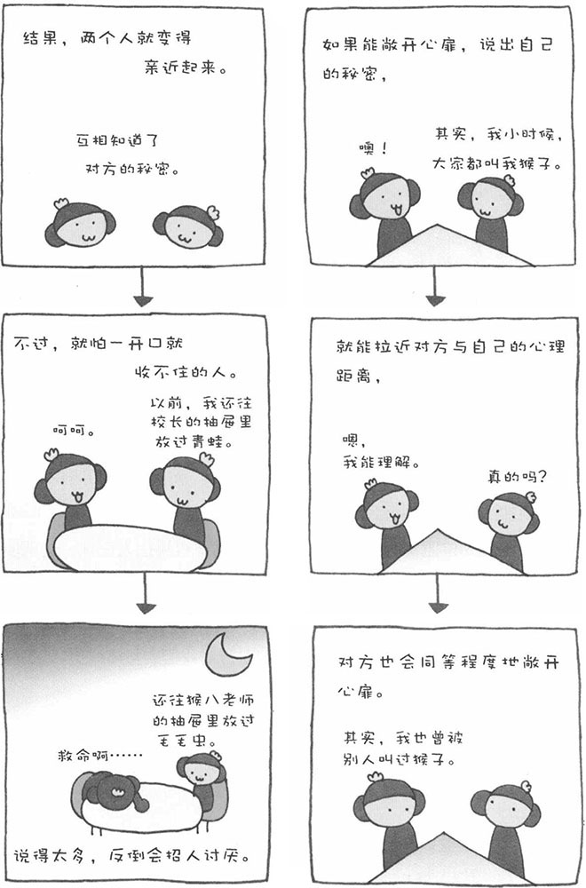

有时，闲来无事随意聊天的男女，也许会在某个瞬间坠入爱河。还有，刚开始谈恋爱的两个人，有时会因为某件事，感情突然加深很多。其中一种情况就是，一方敞开心扉，向对方说了很重要的事情。
比如，从未向任何人说起过的秘密、家庭内的问题等等，这就叫做"自我告白"。不论说的人还是听的人，都会增加对对方亲密感。由于自我告白只限于自己信任的人、亲密的人，听的人就会感觉对方信任自己，没把自己当外人，于是也会信任对方。而且，有趣的是，听的人也会以相同的程度进行自我告白。因为对方信任我、说了他的秘密，我也要把自己的秘密告诉他，这就是"自我告白的回报性"。经调查显示，女性更善于使用自我告白的方法来构筑良好的人际关系，而男性则很少对别人进行自我告白。
与自我告白类似，心理学上还有一种说法叫做"自我呈现"。自我呈现，是指意识到别人在注意自己，然后有意识地去做对方期待的行为、说对方期待的话。也就是说，这是一种有意识地塑造自我的行为。1986年，日本的中村教授进行了一项试验，以自我呈现的形式向参加试验的人说自夸的话和谦虚的话，然后看这些人更喜欢哪一种。他事先准备了一些台词，以谦虚的话为基础，在其中加入自夸的话，只不过自夸的话所占的比例有所变化。结果表明，当自夸的话占60％的时候，是最受人欢迎的。也就是说，自夸的话太多，或者太过谦虚，都是不好的。
